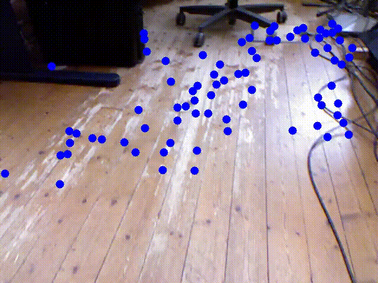
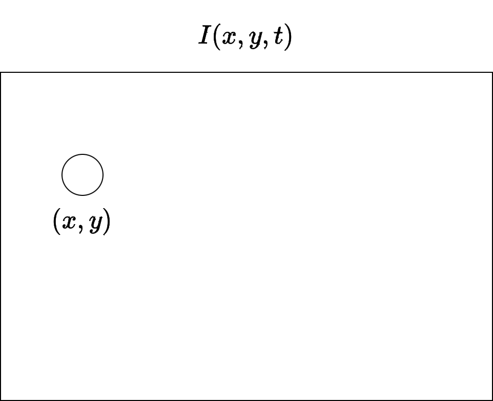
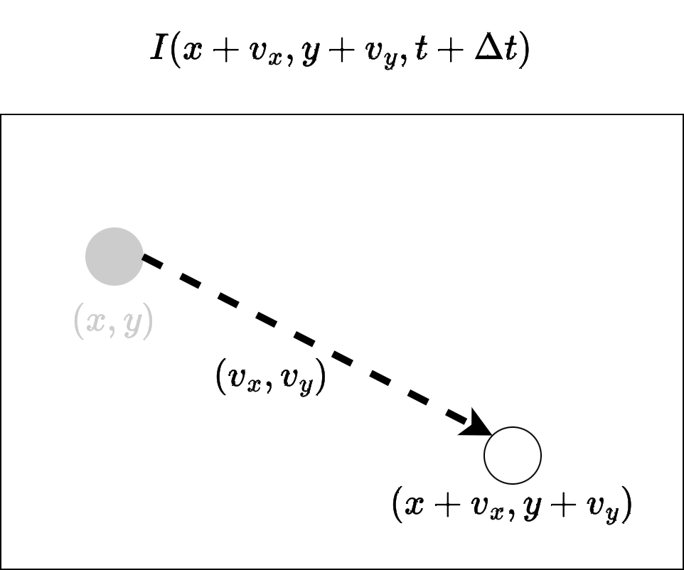
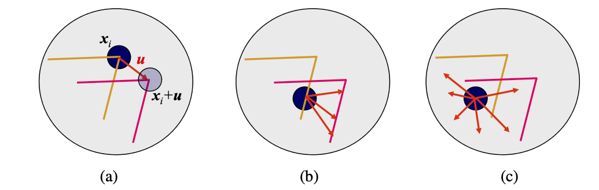
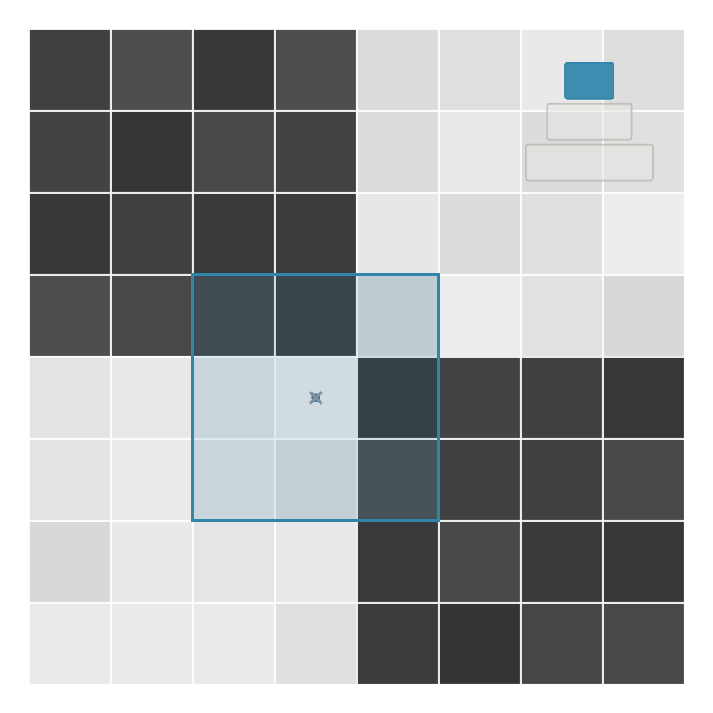
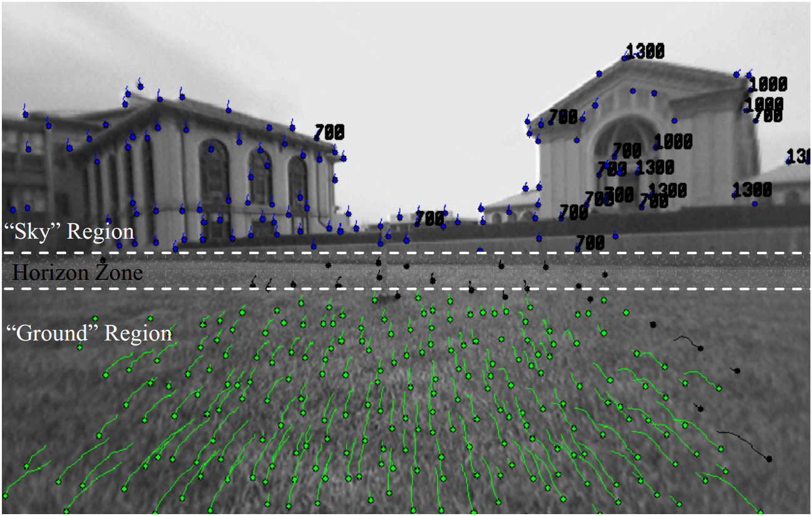
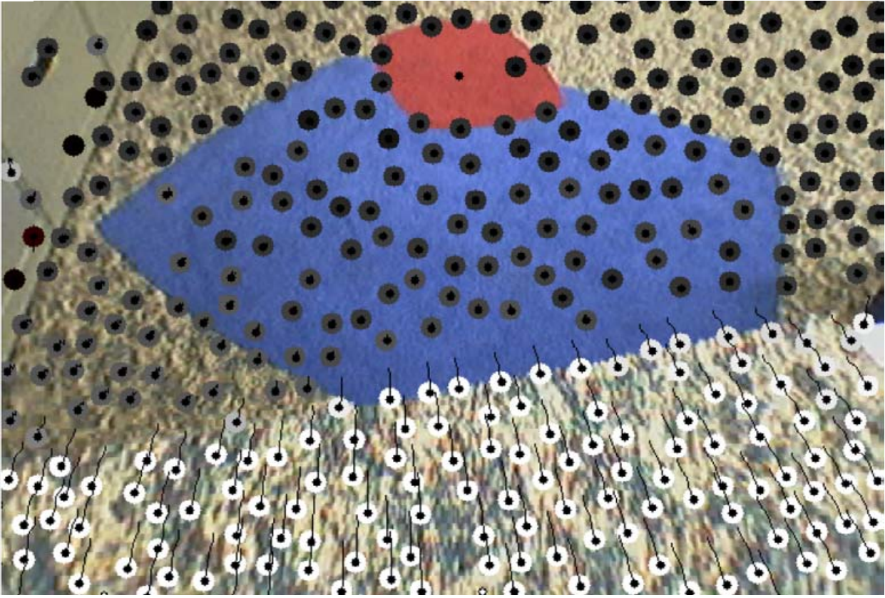
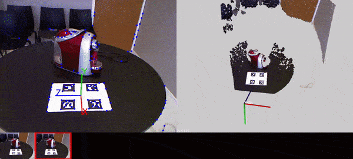

ECT/UFRN
Aplicações com features do tipo ponto (corner) frequentemente precisam de correspondências entre diferentes imagens
Para isto:
Ao rastrear features ao invés de detectá-las em cada nova imagem, o custo computacional da obtenção de correspondências entre pontos é menor.
Uma das formulações deste problema é conhecida como fluxo óptico.

O fluxo óptico de uma imagem:
Dadas duas imagens I_1 e I_2:
I_1 obtida no instante de tempo t.

I_2 obtida no instante de tempo t+\Delta t.

O ponto (x,y) se desloca por (v_x,v_y) até (x+v_x,y+v_y).
Por definição:
I_1(x,y,t)=I_2(x+v_x,y+v_y,t+\Delta t)
Isto é, a segunda imagem deve ser igual à primeira mais os deslocamentos de cada ponto.
Para calcular o fluxo óptico entre as imagens, assumem-se as seguintes premissas:
Matematicamente, a variação ao longo do tempo da intensidade/brilho I(x,y,t) deve ser nula, o que dá origem à equação da constância de brilho:
\frac{dI(x,y,t)}{dt}=0
A equação anterior pode ser desenvolvida como:
\begin{aligned} \frac{dI(x,y,t)}{dt} &=\frac{\partial I}{\partial x}\frac{dx}{dt} +\frac{\partial I}{\partial y}\frac{dy}{dt} +\frac{\partial I}{\partial t} \\ &=0, \end{aligned}
Com
G_x=\frac{\partial I}{\partial x}\qquad\text{e}\qquad G_y=\frac{\partial I}{\partial y}
formando o vetor gradiente da imagem \nabla G^t=[G_x,G_y]^t,
v_x=\frac{dx}{dt}\qquad\text{e}\qquad v_y=\frac{dy}{dt},
formando o vetor deslocamento \mathbf{v}=[v_x,v_y]^t e
\frac{\partial I}{\partial t}=I_t
sendo mudança de intensidade ao longo do tempo na posição (x,y),
tem-se:
G_xv_x+G_yv_y=-I_t
que pode ser escrito na forma vetorial como:
\nabla G^t\mathbf{v}=-I_t
Desta forma, temos uma única equação para duas incógnitas (as componentes do vetor \mathbf{v}). Como proceder?
Uma solução para este problema foi formulada por Lucas e Kanade, no que ficou conhecido como algoritmo de fluxo óptico de Lucas-Kanade (LK)
Sistema linear: as incógnitas são as componentes do vetor de deslocamento \mathbf{v}. O sistema é sobredeterminado (possui N\times N equações para 2 incógnitas):
\begin{bmatrix} G_x(\mathbf{p}_1) & G_y(\mathbf{p}_1) \\ G_x(\mathbf{p}_2) & G_y(\mathbf{p}_2) \\ \vdots & \vdots \\ G_x(\mathbf{p}_{N\times N}) & G_y(\mathbf{p}_{N\times N}) \end{bmatrix} \begin{bmatrix}v_x\\v_y\end{bmatrix} =-\begin{bmatrix} I_t(\mathbf{p}_1)\\ I_t(\mathbf{p}_2)\\ \vdots\\ I_t(\mathbf{p}_{N\times N}) \end{bmatrix}
Resolver o sistema sobredeterminado A\mathbf{v}=\mathbf{b} equivale a minimizar a função erro dada por:
\varepsilon(\mathbf{v})= \sum_{\mathbf{p}_i\in W}\left(\nabla G^t\cdot\mathbf{v}+I_t\right)^2
A solução para \mathbf{v} é obtida resolvendo-se:
A^tA\mathbf{v}=A^t\mathbf{b}
que, por sua vez, é dado por:
\begin{bmatrix} \sum G_x^2 & \sum G_xG_y \\ \sum G_xG_y & \sum G_y^2 \end{bmatrix} \begin{bmatrix}v_x\\v_y\end{bmatrix} =-\begin{bmatrix}\sum G_xI_t\\\sum G_yI_t\end{bmatrix}
com os somatórios computados em \mathbf{p}_i\in W.
Em algumas situações, a matriz A^tA não possui inversa:

Para o fluxo óptico não ter ambiguidade:
Isto já foi visto no curso:
O resultado do fluxo óptico pode então ser interpretado como:
Sendo \mathbf{p}_i da imagem I_t e \mathbf{p'}_i da imagem I_{t+1}, temos:
Ou seja, é possível calcular o fluxo óptico -\mathbf{v} na direção contrária para validar \mathbf{v}:
\mathbf{p}_i + \mathbf{v} \approx \mathbf{p'}_i - \mathbf{v}
O algoritmo de Lucas-Kanade possui uma versão piramidal:

A estimativa do nível da pirâmide anterior (cinza) é usada como solução inicial para resolver o sistema linear, resultando na estimativa do nível atual (vermelha).
Aplicações do fluxo óptico: navegação e detecção de obstáculos para robôs planares (Campbell et al. 2005).


Aplicações do fluxo óptico: SLAM e reconstrução 3D (Silva 2015).

Função da OpenCV relacionada ao tópico da aula:
cv.calcOpticalFlowPyrLK
Nesta aula — cálculo do fluxo óptico:
Visão Robótica - PPGEMECA/UFRN